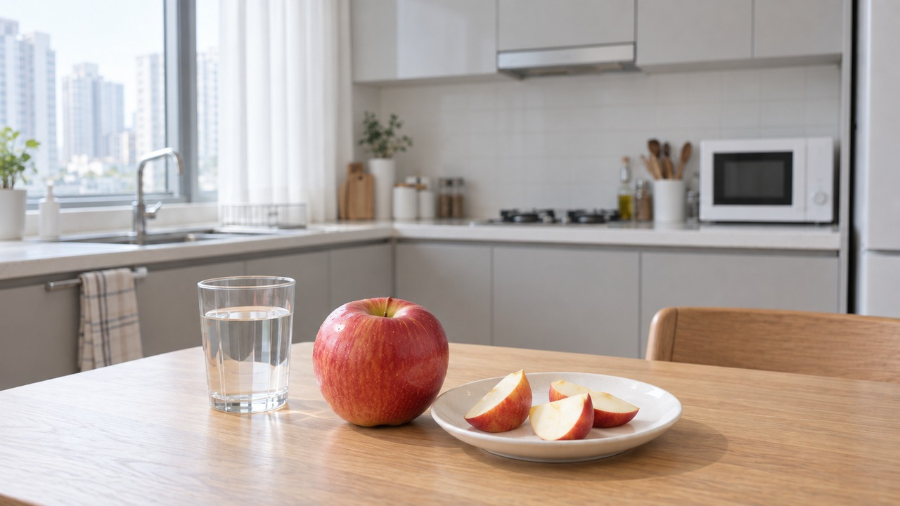
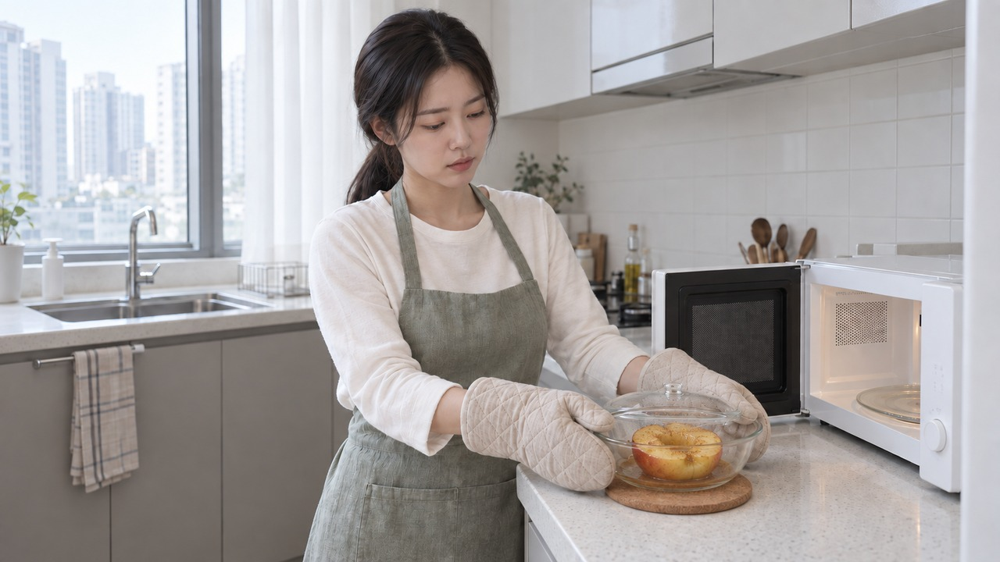
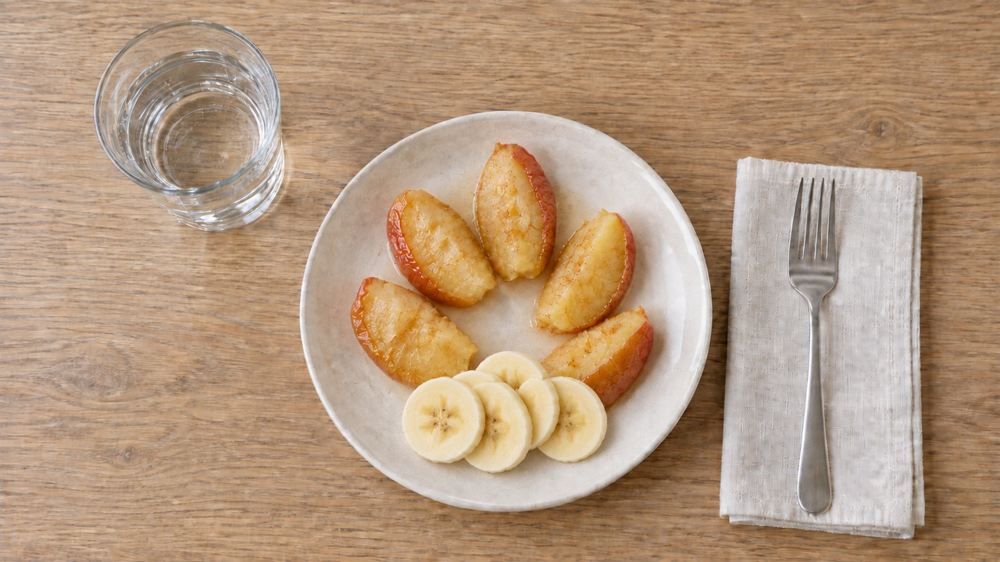

아침 식탁에 준비한 사과와 물 한 잔
아침 공복 사과 속쓰림 원인과 위장 부담 낮추는 사과 찌기를 찾아오신 분들이 많으실 겁니다.
건강을 위해 붉은 사과를 한 입 베어 물었다가 얼마 지나지 않아 명치가 타는 듯 쓰라렸던 적 있으신가요?
'아침 사과는 금사과'라는 말만 믿고 먹었는데
속이 콕콕 찌르고 쓰려서 덜컥 위염이 아닐까 걱정되셨을 겁니다.
사과를 먹고 쓰리다고 해서 바로 위염인 것은 아닙니다.
대부분의 위염에서 음식은 직접적인 발병 원인이 아니며, 사과는 점막을 건드리는 자극 요인일 수 있습니다.
만약 아침마다 사과를 먹고 속이 반복해서 불편하다면
억지로 참지 말고 섭취를 조절하거나 잠시 쉬어가는 것이 먼저입니다.
| 빈속에 먹은 생사과가 위를 찌르는 까닭
사과를 먹은 뒤 불편한 부위와 증상을 살피는 모습
밤사이 우리 위장은 음식물 없이 비어 있지만,
기저 위산이 분비되어 있는 산성 환경입니다.
이 상태에서 사과처럼 산미가 있는 음식이 들어가면
개인의 민감도에 따라 일시적인 속쓰림이나 불편함을 느낄 수 있습니다.
다만 사과를 먹고 난 뒤의 불편함은 사람마다 원인이 다양하므로,
단순한 증상 양상만으로 특정 원인이나 상태를 섣불리 단정할 수는 없습니다.
게다가 사과 껍질은 식감이 다소 질겨
충분히 씹어 드셔야 소화 과정의 부담을 덜 수 있습니다.
산미에 민감한 상태에서 질긴 식감까지 더해지면
속이 더 더부룩하거나 불편하게 느껴질 수 있습니다.
| 껍질은 취향에 맞게, 물은 편하게 한 잔

껍질이 질기게 느껴질 때 선택적으로 손질하는 예시
위장이 예민한 분이라면 눈을 뜨자마자
체온과 비슷한 따뜻한 미온수 1컵을 천천히 드셔보세요.
밤새 메마른 입안과 목을 부드럽게 헹구고
수분을 자연스럽게 보충해 주는 유익한 습관입니다.
껍질은 꼭 깎지 않아도 됩니다.
깨끗이 씻어 익힌 뒤 씹기 편하면 함께 드세요.
익혀도 껍질이 질기거나 입안에 남는 느낌이 싫다면
그때 벗겨 먹으면 됩니다. 내게 편한 식감으로 고르세요.
| 사과 반쪽을 4~5분 익힌 뒤 잘라 먹는 방법

씨를 제거한 사과 반쪽을 덮개 있는 용기에 익혀 꺼내는 모습
따뜻한 사과 간식을 만들고 싶다면
반쪽째 익힌 다음 먹기 좋게 잘라보세요.
사과를 흐르는 물에 씻어 반으로 자르고 씨와 단단한 심을 제거합니다.
전자레인지용 깊은 용기에 사과 반쪽을 담아주세요.
달콤한 계피 향을 더하고 싶다면 시나몬 가루를 살짝 뿌려주세요.
버터는 고소한 풍미를 원할 때 씨를 파낸 자리에 조금 넣으면 됩니다.
둘 다 꼭 필요한 재료는 아니니, 사과만 익혀 드셔도 좋아요.
전자레인지용 뚜껑을 덮고 증기 배출구를 열거나 작은 틈을 남겨주세요.
사과 반쪽을 4~5분 익히되, 익힘 상태에 따라 시간을 조절해 주세요.
기기 출력과 사과 크기에 따라 달라지니 중간에 익힘을 살펴주세요.
포크가 과육에 쉽게 들어가면 꺼내 잠시 식혀주세요.
덜 익었으면 짧게 추가 가열해 확인합니다.
장갑으로 용기를 잡고 뚜껑은 얼굴 반대쪽으로 열어 뜨거운 김을 피하세요.
먹기 좋은 온도가 되면 껍질째 잘라 소량부터 드시면 됩니다.
시나몬을 살짝 뿌려 익히면 애플파이가 떠오르는 따뜻한 계피 향이 나요.
아삭하던 사과는 부드럽고 촉촉해지고,
사과의 달콤함에 계피 향이 은은하게 어우러집니다.
따뜻한 디저트가 생각날 때 간단히 즐기기 좋아요.
다만 가열 후에도 사과산 자체가 모두 사라지는 것은 아니므로,
조리 후에도 속이 쓰리다면 억지로 드시지 않는 것이 중요합니다.
| 달콤한 바나나를 곁들여 한 김 식힌 뒤 드세요

시나몬을 더한 익힌 사과에 바나나를 곁들인 간식
시나몬을 더한 익힌 사과에 부드러운 바나나를 곁들여 보세요.
사과의 산미를 달콤한 바나나가 부드럽게 감싸주고 식이섬유와 칼륨도 함께 챙길 수 있어 디저트처럼 즐기기 좋습니다.
익힌 사과는 겉보다 속이 더 뜨거울 수 있어요.
충분히 식힌 뒤 먹기 좋은 크기로 잘라주세요.
반쪽을 만들었다고 한 번에 다 먹을 필요는 없습니다.
몇 조각부터 천천히 먹고 내게 편한 양을 찾아보세요.
익힌 뒤에도 껍질이 질기게 느껴지면 벗겨 드세요.
사과를 먹고 속이 불편하면 더 먹지 마세요.
• 진료 기준 안내: 숨이 차거나 흑색변 등 출혈과 같은 급작스러운 이상 신호가 나타나면 지체 없이 즉각적인 응급 처치와 진료를 받아야 합니다. 한편 조리법을 바꾸어도 속쓰림이나 소화 불편이 수주 이상 계속 이어진다면 내과 외래를 찾아 면밀하게 상태를 확인해 보시는 것이 좋습니다.
| 내 몸에 맞는 건강한 아침 루틴을 시작합니다

식사를 잠시 멈추고 불편했던 증상을 기록하는 모습
아침 사과는 좋은 과일이지만,
자신에게 맞지 않는다면 억지로 먹을 필요가 없습니다.
따뜻한 간식이 생각나는 날에는 사과 반쪽을 익혀 잘라보세요.
껍질과 시나몬은 내 취향과 먹었을 때의 편안함에 맞춰 선택하면 됩니다.
조리법을 바꿔도 속이 계속 쓰리다면 섭취를 중단하고,
내 소중한 위장을 위해 다른 편안한 음식을 선택하는 지혜를 발휘해 보시길 바랍니다.
여러분은 평소 아침에 사과를 생으로 바로 드시나요,
아니면 따뜻하게 찌거나 식사와 함께 드시나요? 편하게 댓글로 이야기를 들려주세요 😊
- 서울아산 건강정보 — 위 건강 안내
- 서울아산 건강정보 — 역류 증상 안내
- 해외 보충 자료: 미국 국립보건원(NIDDK) 위 안내 · 미국 CDC 영유아 안전 안내